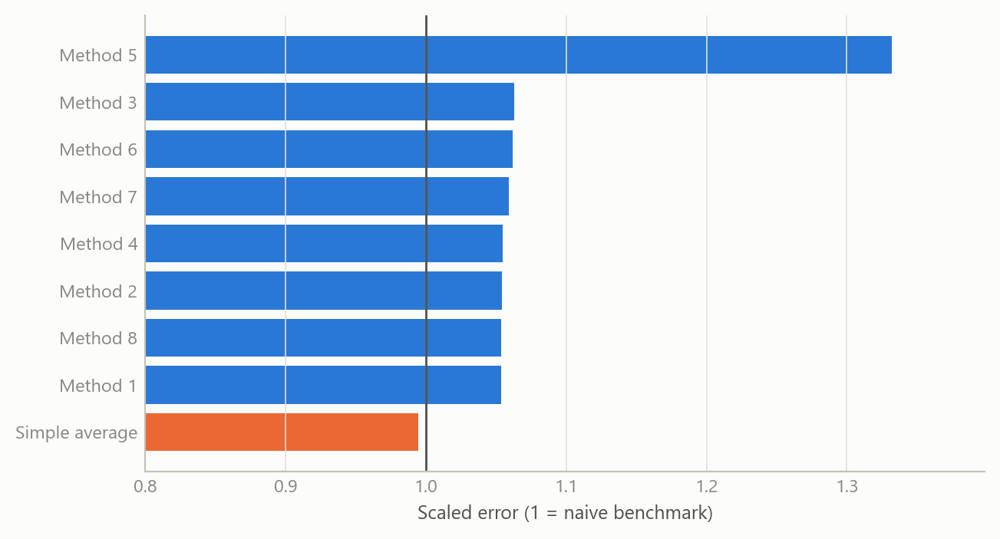
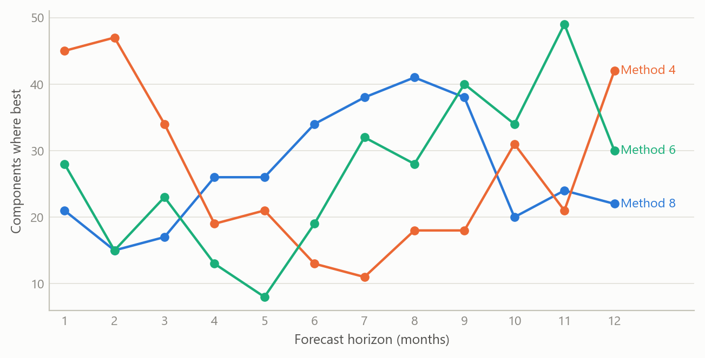
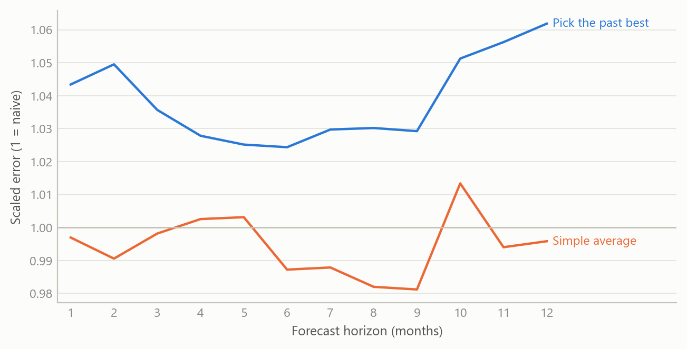

No single forecasting method wins everywhere
Across 181 US consumer-price components, only a simple average of the methods beat a naive benchmark
Inflation forecasting
A cross-validated comparison of forecasting methods for 181 components of US consumer prices at horizons of 1 to 12 months, and why averaging beat picking.
The question
Forecasters who work from the bottom up, building headline inflation from its components, face a practical problem. A consumer-price index has well over a hundred published components, and they do not behave alike. Rents move slowly. Energy and some food items swing sharply. Apparel and travel carry strong seasonal patterns and large one-off spikes. A method that suits one of these can do badly on another.
The usual answer is to pick a method and apply it everywhere, or to pick the best method for each component after some testing. Both rest on an assumption that there is a stable winner to find. This project tests that assumption directly. For each component, and at each forecast horizon from one month to twelve, which method is actually best, how large is its edge over doing almost nothing, and is the edge stable enough to rely on?
Approach
Coverage. The comparison covers 181 components of the US consumer price index for all urban consumers, from the broad headline down to detailed items. Forecasts are made for each month ahead, from one to twelve.
Candidate methods. Nine forecasts compete on every component: eight individual methods and their simple, equally weighted average. The individual methods are statistical models of different families. Some forecast the underlying trend and seasonal pattern of the series directly, others split the series into trend, seasonal and irregular parts and forecast each part separately, and one treats the irregular spikes explicitly. All are built to be run automatically, so that the same procedure applies to every component without hand tuning.
Scoring. Each forecast is scored by its mean absolute error, scaled by the mean absolute one-period change of the series itself. This is the mean absolute scaled error. A score of 1 means the method is no better than the naive benchmark, which assumes the series simply carries on from where it is. A score below 1 means it beats that benchmark. Scaling by the series’ own volatility puts a calm item like rent and a wild one like fuel on the same footing, so averages across components mean something.
Cross-validation. Scores come from repeated out-of-sample tests. The forecast origin is rolled forward through twelve validation windows, the models are re-estimated at each, and every forecast is judged only on data it had not seen. In-sample fit plays no part in the ranking.
Combination. Beyond the simple average, the work also explored weights that favour methods with lower past error, using an exponential decay of the scaled error, normalised to sum to one, and allowing the weights to differ by horizon. These refinements were explored for the pipeline and are not part of the headline comparison.
What the work shows
No single winner. Across the 181 components, the method that comes first most often does so for only 38 of them, roughly one component in five. The leader also changes with the horizon. At the one-month horizon the most frequent winner is first for 32 components, while at seven months a different method leads, for 40. Mid-sized differences like these, spread across eight methods, are what a world without a stable winner looks like.
Persistence is the exception. For a method to be reliable, it should lead at many horizons for the same component. That happens rarely. Only six components have a method that leads at six or more horizons, and the longest such run is ten. For the rest, the best method at one horizon is not the best at the next.
Averaging beats the benchmark. The simple average of the methods scores 0.989 on the scaled error, so it improves on the naive benchmark by about 1 per cent. Every individual method scores above 1, between 1.04 and 1.33. The margin is small, and the paper-thin edge is itself an insight: monthly price components are hard to forecast beyond what the recent past already says, and a method that is merely competitive does not beat doing nothing.
Why averaging helps. The methods err in different directions at different times. Taking their mean cancels part of the disagreement, so the average inherits the stability of the group instead of the risk of any one member. The weakest method here, whose average score is the worst by some distance, is still best for a good number of components at some horizons. That is why dropping it on average grounds would have cost accuracy exactly where it worked.
The figures that follow are simulated to share the shape of the real exercise: the same number of components, the same twelve horizons and the same eight methods plus an average. They show the mechanism, not the project’s measured numbers.

The second figure shows the leadership problem. Each line is one method’s count of component wins. The lines cross, so the ranking at one horizon is not the ranking at another.
Insights
- Picking a winner is a bet on persistence. If the best method changes with the horizon and with the component, a choice made on past results will often lead you to the wrong one. Averaging gives up the chance of being exactly right in return for avoiding the cost of being wrong.
- The naive benchmark is a demanding standard. For monthly price components, a method has to do better than “no change from here”. Eight of nine entries here failed that test on average. Reporting results against that benchmark, rather than against other models, keeps the claim honest.
- Scale the error, then average across components. Without scaling by each series’ own volatility, the volatile components dominate any average. The scaled error makes the comparison fair across rent, energy and apparel.
- A badly scored method can still be useful. A method with the worst overall score still leads for some components and horizons. Judging methods by their overall average hides where each one earns its place, which is an argument for combining rather than culling.
- Failure cases are informative. A small set of components gave the models trouble and some methods received zero weight on them. Those cases point to where a series-specific approach is worth the effort, instead of a generic one.

The last figure illustrates insight 1. A method chosen because it won a first round does worse on the next round than the average of all of them, because part of its win was luck. It is a simulation of that mechanism and does not report a measured gap.
Limits and next steps
- Overall averages only. The scaled-error results in hand are averages across components and horizons, plus counts of which method led. A horizon-by-horizon profile for each method is the missing piece, and it is what would show where in the 1-to-12 range the average gains most.
- A small margin. An average score of 0.989 beats the benchmark narrowly. This work does not test whether that gap is statistically distinguishable from zero. A proper test, for instance a pairwise forecast-accuracy comparison with a correction for many series, is the next step.
- Counts are not magnitudes. A method that wins often may win by little. The win counts say how often a method leads, not by how much.
- Weighted combinations are unfinished. Error-based and horizon-specific weights were explored but not evaluated against the equal-weight average on held-out data. Whether they beat it is open.
- One economy and one period. The comparison is for US consumer prices and a recent window that includes unusual inflation. It would be worth repeating across economies and over calmer periods.
About the evidence
The comparison itself is real: 181 US consumer-price components, forecast one to twelve months ahead, scored by cross-validation, and completed in 2025 as part of the rebuild of a forecasting pipeline during a career break. The numbers quoted in the text come from its summary results. Everything drawn in the figures is simulated.
Figures and tables marked simulated are generated from simulated data built to share the structure of the analysis (its variables, horizons and frequencies). They show how the method works and what its output looks like; they are not the project’s results. Results stated in the text are the project’s own. Methods are described at the level of a methods section. Code and data pipelines are not reproduced here.